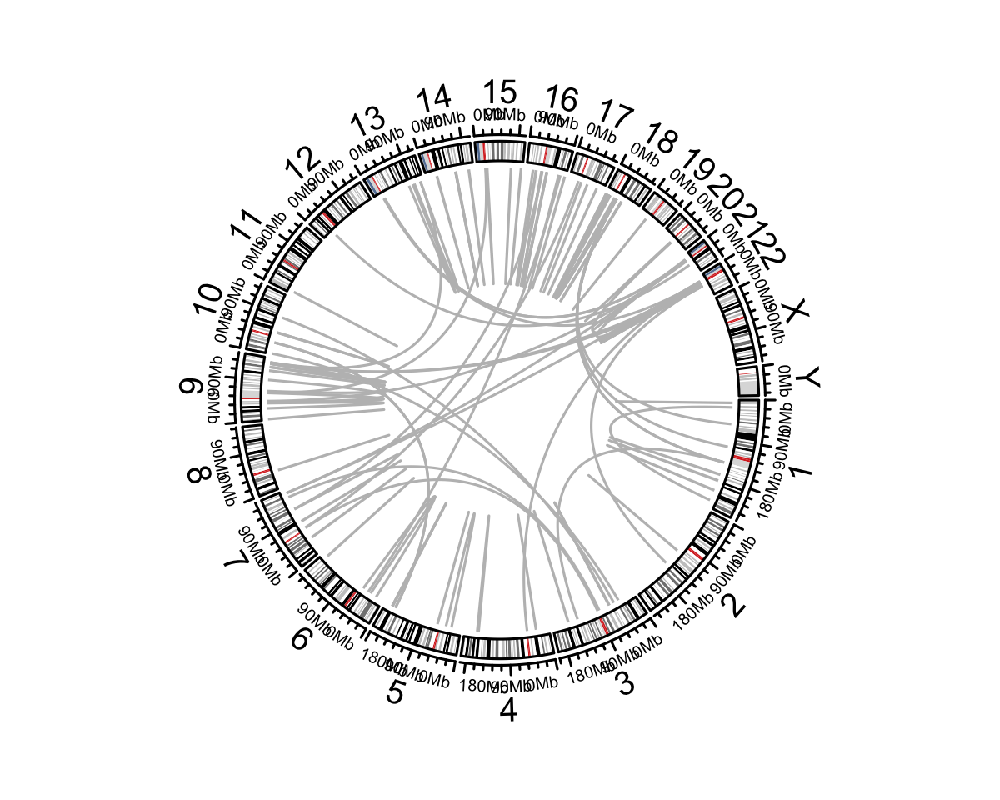

Fusionplot.Rmd
library(pacbiowdlR)
sv_file <- system.file("extdata", "examples/K562.GRCh38.structural_variants.phased.vcf.gz", package = "pacbiowdlR")
fusions<-get_fusions_from_vcf(sv_file, plot = T, filter = "")
Wow, that is a lot of fusions. Many of these may be artifact, but K562s are genomically complex to say the least. Let’s see if we can learn a little more about these events. First, to properly annotate them we need to load a gtf file into memory. This annotation uses the “canonical transcripts” for every gene, which is simply defined for these purposes as the longest transcript. Note that for human genome, this can take up about 10GB in RAM and takes about 1-2 minutes. One can check the presence of a loaded gtf as shown.
gtf <- "/Users/sfurlan/Library/CloudStorage/OneDrive-FredHutchCancerCenter/computation/refs/GTFs/gencode.v47.chr_patch_hapl_scaff.annotation.gtf"
preload_gtf(gtf)
exists("gtf_env", .GlobalEnv)[1] TRUEThen we can annotate the fusions (dont worry the gtf is loaded and won’t need to reload if the above steps worked):
fusions <- get_fusions_from_vcf(sv_file, gtf_file = gtf, plot = T, annotate = T, filter = "") processed 202/202Okay, that is a seemingly overwhelming number of gene-gene fusions… We can filter the fusion calls to known fusions and highlight the fusions that are found in the database.
db_fusions <- get_neosplice_db()
results <- find_related_fusions(fusions, db_fusions)
hits <- as.numeric(which(sapply(results, function(f) length(f)>0)))
fusions[hits,] chr1 chr2 start1 start2 bp1_gene bp1_feature bp1_gene_strand bp1_type
53 chr22 chr9 23290552 130731762 BCR intron + genic
bp2_gene bp2_feature bp2_gene_strand bp2_type bp1_within_exon
53 ABL1 intron + genic NA
bp1_fiveprime_exon bp1_threeprime_exon bp2_within_exon bp2_fiveprime_exon
53 14 15 NA 1
bp2_threeprime_exon bp1_upstream_gene bp1_upstream_dist bp1_downstream_gene
53 2 <NA> NA <NA>
bp1_downstream_dist bp2_upstream_gene bp2_upstream_dist bp2_downstream_gene
53 NA <NA> NA <NA>
bp2_downstream_dist fusion_name fusion_details
53 NA BCR--ABL1 BCR (intron) -- ABL1 (intron)
predicted_fusion_sequence
53 CGGGACACCTTTGACCCTGGCCGCTGTGGACTCCTTTGTATTTCCATATACATTTTAGAG
print_fusion_matches(results[hits])Fusion Matches Summary:
=======================
Fusion 53: Found 5 matches
1. Match for fusion 53: BCR--ABL1 (score: 250.00) - Gene1: BCR (exon 14), Gene2: ABL1 (exon 2)
2. Match for fusion 53: BCR--ABL1 (score: 235.00) - Gene1: BCR (exon 13), Gene2: ABL1 (exon 2)
3. Match for fusion 53: BCR--ABL1 (score: 235.00) - Gene1: BCR (exon 14), Gene2: ABL1 (exon 3)
4. Match for fusion 53: BCR--ABL1 (score: 230.00) - Gene1: BCR (exon 15), Gene2: ABL1 (exon 4)
5. Match for fusion 53: BCR--ABL1 (score: 227.50) - Gene1: BCR (exon 15), Gene2: ABL1 (exon 5)
plot_fusions(fusions, annotate = T, highlight = hits)